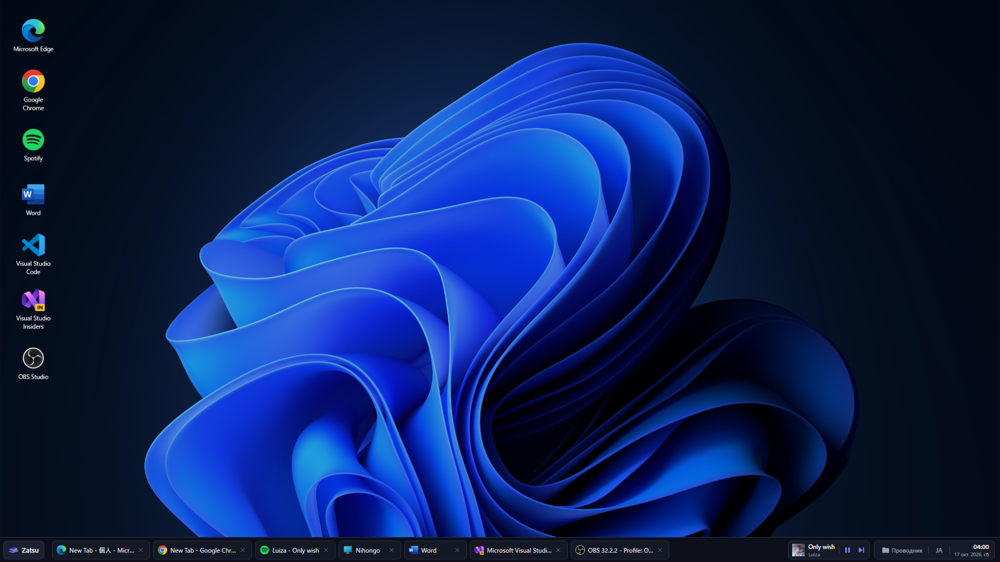
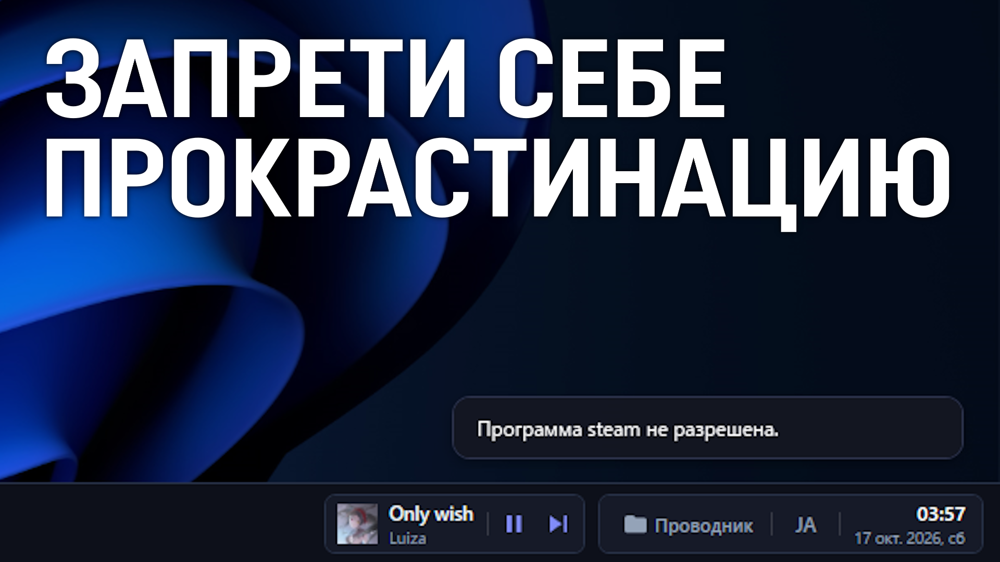
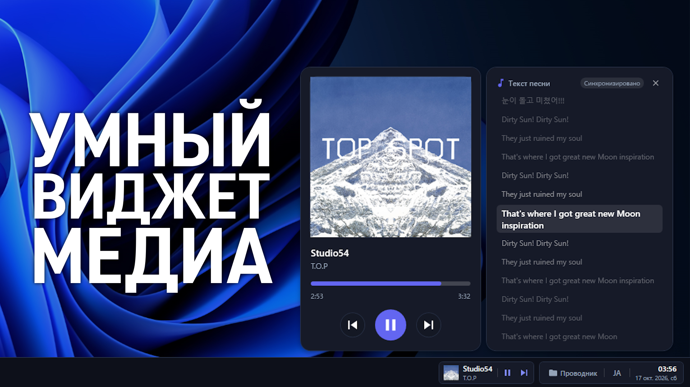
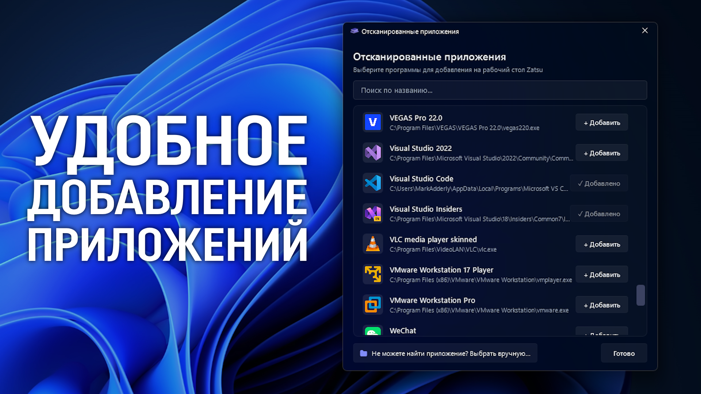

Скачать Zatsu
Специальная оболочка, которая поможет вам сосредоточиться на учёбе или работе.
В этой программе вы можете создать чистое рабочее пространство без лишнего визуального шума и удобно организовать доступ только к нужным задачам. Также, вы можете ограничить запуск игр и отвлекающих программ, а встроенный плеер с текстом песен поможет работать под любимый саундтрек. В Zatsu доступны темы оформления, благодаря которым вы можете настроить программу на свой вкус.




Системные требования
• Для запуска программы требуется Windows 10 1809 (2018) и .NET Core 10 (уже предустановлен в портативной версии).
Большое обновление - Zatsu 1.1!
Это быстрый, но достаточно большой хотфикс, в котором исправлены критические проблемы и уязвимости, а также добавлены полезные фишки, которые улучшат опыт использования программы! Это первая часть большого обновления - вторая выйдет к концу года. Начнём с нововведений!
Полноценная поддержка нескольких мониторов
Теперь Zatsu умеет работать с дополнительными мониторами точно так же, как и системная панель задач Windows. На каждом мониторе теперь отображается своя независимая панель задач, и в ней находятся только те окна, которые открыты именно на этом мониторе. Анимации сворачивания и разворачивания окон теперь тоже привязаны к конкретному монитору.
Свой таймер выключения Zatsu
Вместо фиксированной кнопки на 12 часов, теперь будет кнопка "ЗАДАТЬ ВРЕМЯ", где можно задать абсолютно любое собственное время сессии.
Подсчёт аптайма запущенных программ на панели задач
Появился счётчик времени работы программ. При наведении курсора на программу на панели задач, вы увидите сколько именно она запущена.
Ромадзизация текстов песен
В музыкальной панели Zatsu появилась очень полезная фишка для любителей азиатской музыки - ромадзизация текста!
Если трек на японском, китайском или корейском языке, программа в реальном времени будет транслитерировать иероглифы в латиницу. Доступны - Японский Хэпбурн, Китайский Пиньинь, Корейская транслитерация, и совмещённый японский+китайский режим). Словари встроены в саму программу, так что всё работает полностью локально, и ничего докачивать не нужно.
Панель задач теперь сохраняет порядок приложений
Раньше при запуске Zatsu значки на панели задач могли выстраиваться в произвольном порядке. Теперь программа считывает порядок закрепления и открытых окон из системной панели задач, и значки встают ровно на те места, на которых они находились до открытия.
Новый календарь на панели задач
По многочисленным просьбам, в программу добавлен встроенный календарь. При клике на часы и дату в правом нижнем углу теперь открывается всплывающий календарь в фирменном дизайне Zatsu!
Исправления и улучшения:
- Исправлено некорректное отображение программы на Windows 10.
- Исправлены артефакты и наслоение цветов в светлой теме системы.
- Исправлена проблема со старыми приложениями, когда иконки отображались слишком мелко и были практически не видны на рабочем столе и в меню отсканированных программ.
- Переработана система шрифтов на рабочем столе - это улучшило читаемость текста у иконок при любом масштабировании.
- Исправлена проблема с некорректным открытием музыкального виджета при смене масштаба.
- Исправлена анимация закрытия приложений на панели задач.
- Исправлена анимация сворачивания и разворачивания окон на дополнительных мониторах.
- Исправлена ошибка, из-за которой медиа в системе могло не переключаться через виджет музыки.
- Теперь текст песни можно прокручивать вручную, и он больше не перескакивает к текущей строке.
Это позволяет отвязать окно с текстом и свободно его листать. - Кнопка переключения медиа на панели задач теперь скрывается, если эта функция недоступна.
Zatsu полностью бесплатен и будет оставаться доступным для всех, благодаря поддержке неравнодушных пользователей.
Вы можете приобрести подписку на Boosty и получать обновления раньше остальных.
Например, другая программа - MakuTweaker 5.8 для подписчиков была доступна ровно на 3 месяца раньше официального релиза.
Вы тоже можете стать тем, кто получает обновления в числе первых всего за символическую плату!